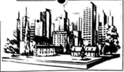
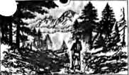
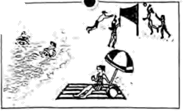
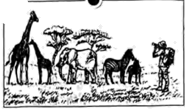
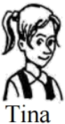
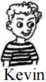
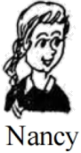
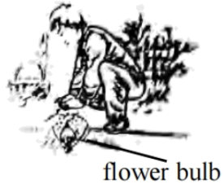

2025年北京市中考英语真题 · 阅读理解 第24、25、26、27、28、29、30、31、32、33题
三、阅读理解（每题2分，共26分）
（一）
下列每个图片代表一处旅游目的地，请根据人物的旅行计划匹配最适合的图片，并将图片所对应的选项（A、B、C、D）填在相应位置上，其中一个选项为多余选项。
A | B | C | D |
 |  |  |  |
____21____

I want to travel to Africa and see the animals. I’d love to take lots of photos of elephants, giraffes and other animals. I’d like to try sleeping in a tent in the wild.____22____

I’d like to go to North America. I love to walk in forests, climb trees and hike in the mountains. Perhaps I could go birdwatching, too. I enjoy exploring nature.____23____

I’ve decided to tour Australia with my family. My plan is to go to the beach, swim in the sea and sit in the sun. Also, we’re going to play volleyball on the beach.（二）阅读下列短文，根据短文内容，从短文后各题所给的A、B、C、D四个选项中，选择最佳选项。
B

When I was young, flowers filled my mom’s garden each spring. I never thought that Mom had done much about them behind the scenes ( 幕后), until she shared her secret with me.
幕后), until she shared her secret with me.
One day last November, Mom and I spent a whole morning planting flower bulbs. I dropped one in each hole and covered it over with soil. My fingers were numb (麻木的) by the time we finished. However, the ground looked just as flower bulb empty and flat as it had been before. Then Mom told me to wait. I didn’t only wait—I watched. I watched hopefully all through the winter...
On the last day of April, I went outside to find the garden full of colorful flowers. Our hard work paid off.
“My boy, tomorrow morning,” Mom said, “we will walk the neighborhood and leave a basket of flowers on each doorstep.”
“What?” I almost cried. “Are we selling our flowers?”
“Of course not,” she said excitedly. “In fact, nobody will even know they’re from us. We’ll leave them at our neighbors’ as a surprise. Doesn’t that sound fun?”
“To me, it doesn’t sound fun at all” I replied unwillingly. “They’re our flowers. We should keep them for ourselves!”
“Flowers are like kindness,” Mom said. “Their beauty is meant to be shared.”
Early the next morning, Mom woke me up. We brought the baskets and stopped near the first house. I took one basket, set it by the doorstep and rang the bell. Then we quickly ran away, ducked behind the trees and waited.
Finally, the door opened. A man came out, looking surprised. He picked up the flower basket and then smiled. Mom hugged me. I got a good feeling inside. Now I knew what she meant about beauty sharing. I couldn’t wait to get to the next house.
By the time we got home, I was grinning (咧着嘴笑) from ear to ear. The garden was empty, but my heart was full.
24. How did the writer feel when he watched the garden during the winter?
A. Empty.B. Excited.C. Hopeful.D. Bored.
25. What happened to the baskets of flowers in the end?
A. They were sold for pocket money.B. They were given to the neighbors.
C. They were collected for recycling.D. They were put up on a flower show.
26. What made the writer’s heart full?
A. The joy of spreading kindness.B. The excitement of growing flowers.
C. The honor of helping people in need.D. The happiness of getting close to nature.
C
Imagine a robot. What comes to your mind first? A machine stronger than the human body? However, this same quality is now causing a big problem—it’s creating tons of long-lasting e-waste that could flood our planet. What if, instead, the machines we use were designed to break down and disappear—just as living things do?
For a study published in Science Advances, researchers made a robotic arm and a controller using materials from animals and plants. These materials are strong enough to work but can easily break down in a natural environment. After testing, both parts were gone in soil within weeks.
Biodegradable (可生物降解的) robotics often falls under the umbrella of soft robotics, which takes ideas from nature. “This field started in materials science and chemistry rather than traditional robots that come from mechanical (机械的) engineering.” says Florian Hartmann, a materials scientist from Germany. However, many early soft robotics models still used man-made materials that cause pollution.
Wei, a scientist who studies natural materials in Hangzhou, worked together with his friend Zhang, a robotics engineer in Shanghai, to build robots for the new study. They started with cellulose (纤维素) taken from cotton. Then, they added glycerol (甘油) to make a new material that is soft and easy to change shapes. After that they allowed it to dry so it became strong, “Cellulose is cheap and easy to work with,” says Wei. They found that the controller and the robotic arm stood up to both heavy use and a week of inactivity. Finally, they buried (埋) them both in a hole. Within eight weeks these two parts were almost completely gone.
Wei and Zhang expect that robots like these can be used to deal with dangerous waste and then disappear naturally. They also hope that such robots can aid doctors in operations and then safely break down inside the body.
However, it’s important to note that the technology is still in very early stages. “If we truly want to have a biodegradable robot,” Hartmann says, “we also need to make sure its electronics and power parts are biodegradable.”
27. What is special about the robotic arm and the controller in Paragraph 2?
A. They are green.B. They are hard.C. They are intelligent.D. They are affordable.
28. What is mentioned in Paragraph 5 about soft robots?
A. Their operation.B. Their applications.C. Their challenges.D. Their performance.
29. What can we learn from the passage?
A. Soft robots are widely used to clean up e-waste.
B. Soft robots have to rest for a week after heavy use.
C. The designing of soft robots borrows ideas from nature.
D. Mechanical engineering offers new ways to run soft robots.
D
People are talking a lot about artificial intelligence (AI), viewing it as a force that could reshape how society works. But there is something important missing from this discussion. It isn’t enough to ask how it will change us. We also need to understand how we shape AI and what it can tell us about ourselves.
Every AI model we develop mirrors our rules and expresses our beliefs. A few years ago, while looking for new workers, a famous company gave up an AI-powered tool after finding it unfavorable to women. The AI was not designed to behave this way, instead, it was influenced by the historical data (数据) favoring men. Similarly, a recent study found that lending algorithms (算法) often offer less favorable terms to colored people, worsening long-standing unfairness in money-lending business. In both cases, AI isn’t creating new biases (偏见), it is mirroring the ones that are already present.
These reflections (反映) give us an important chance to take a close look at ourselves. By making these problems seen and more pressing, AI challenges us to recognize and address what causes algorithmic bias. As AI continues to develop, we must ask ourselves how we as average people want to shape its role in society. We should not only improve AI models, but also make sure that AI is developed and used responsibly.
A number of companies are already taking action. They are judging the data, rules, and beliefs that shape the behavior of AI models. Still, we cannot expect the companies to do all the work. As long as AI is trained on human data, it will reflect human behavior. That means we have to think carefully about the footprints of ourselves we leave in the world. I may value privacy, but if I give it up in a heartbeat to visit a website, the algorithms may make a very different judgment of what I really want and what is good for me. If I want meaningful human connections yet spend more time on social media and less time in the physical company of my friends, I am indirectly training AI models about the true nature of humanity.
As AI becomes more powerful, we need to take increasing care to read our principles (原则) into the record of our actions rather than allowing the two to diverge. Recognizing this allows us to make better decisions, but only when we are prepared to look closely and take responsibility for what we see.
30. Why does the writer introduce the two examples in Paragraph 2?
A. To suggest a solution.B. To stress a difference.
C. To challenge a practice.D. To support a viewpoint.
31. What does the word “diverge” in the last paragraph most probably mean?
A. Improve.B. Appear.C. Separate.D. Repeat.
32. According to the passage, what is a good example of shaping AI responsibility?
A. Guarding one’s privacy against AI models.B. Being mindful of our feeds into AI models.
C. Training algorithms to favor the latest data.D. Designing algorithms to deal with unfairness.
33 Which of the following is the best title for this passage?
Which of the following is the best title for this passage?
A. AI Isn’t the Problem; We AreB. AI: A Tool to Reshape Our Society
C. More Open algorithms for Better AI?D. Building Trust in Human-AI Relationships
第二部分
本部分共5题，共20分。根据题目要求，完成相应任务。